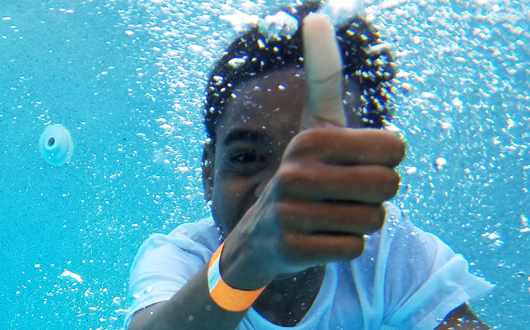

Save a Life - Be a Water Watcher
Drowning is Preventable.
If you can't SEE them you can't SAVE them!
Assign a responsible adult to wear a Water Watcher tag and 100% Supervise Children's water activities.
We're serious about drowning prevention
Watch more videos about water safety, click here.
May is Drowning Prevention Month
Practice Pool Safety - Be a Water Watcher
Download our new Drowning Prevention Brochure
To get Water Watcher tag, contact us or get from your local IPSSA member. Find your local IPSSA member here.
Today I recieved the water watcher tags and brochures that you sent me. They look great! Thank you for sending them so promptly. We have a wedding party on 8/25 at a property that has 2 pools and a hot tub. Many of the guests have small children so I will be giving each family a water watcher tag. We will also be making a reminder after the ceremony for parents to watch their children closely at all times because of the water.
I also plan to share this information with the families at pediatric office where I work. I am a nurse practitioner and I think this kind of preventive education is excellent. Thanks for the work you are doing at IPSSA San Diego Water Safety.
Sincerely, Donna, La Habra, CA
Learn more about Drowning Prevention LEARN
Summer Safety Tips Press Release: Download PDF
Designated Water Watcher tag Press Release: Download PDF
5 Truth of Safe Kids Drawning Prevention
You think that it could never happen to your family, but each year more than 800 children drown. These incidents are not only preventable but predictable. Here are the five truths about children who drown and what you can do to help keep your children safe around water. The most at risk for drowning are toddlers ages one and two.
Download PDFSupervision
- Actively supervise your children around water, and have a phone nearby to call for help in emergency.
When there are several adults present and children are swimming, use a Water Watcher tag to designate an adult as the Water Watcher to prevent gaps in supervision. Parents of toddlers must stay "intouch" when supervising 1 and 2 year olds.
Barriers
- Never leave a child alone when in or near a body of water - even if it's less than a few inches.
- Pool owners, make sure your pool has four-sided fencing and a self-closing, self-latching gate. Contact a licensed contractor or ask your pool professional for information.
- Hot tubs should be covered and locked when not in use.

CPR
- Drowning victims who are rescued from the water need CPR immediately - before the paramedics arrive. It can prevent brain damage and be the difference between lif and death.
- Learn Rescue and CPR skills. Get certified. There are plenty of CPR classes available to meet busy schedules.
- Hot tubs should be covered and locked when not in use.
Swimming Ability
- Children from non-swimming households are eight times more likely to be at-risk of drowning.
- Enroll your child in swimming lessons. If you do not know how to swim either, enroll in a parent-child learn to swim class.
Life Jacket
- Nearly 5,000 boating accidents occur each year in open waters and more than 700 people drown. Nine out of 10 who drown in open water were NOT wearing a life jacket.
- Have your child wear a life jacket every time you go boating or are on a dock.